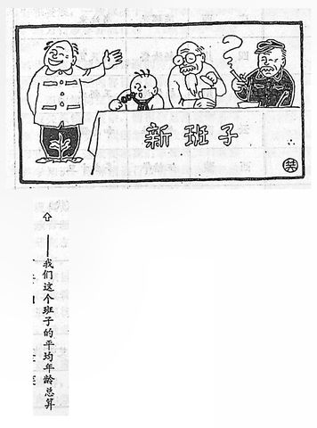
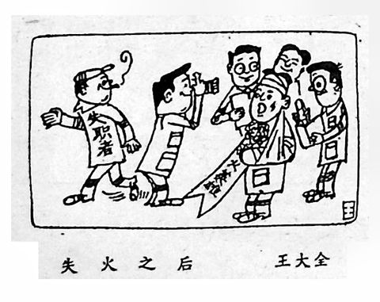
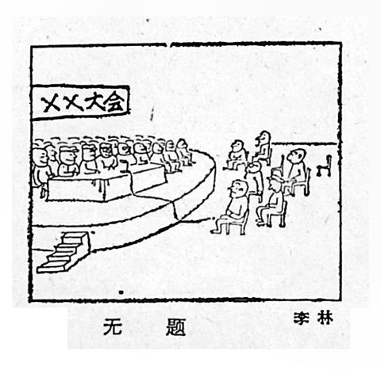
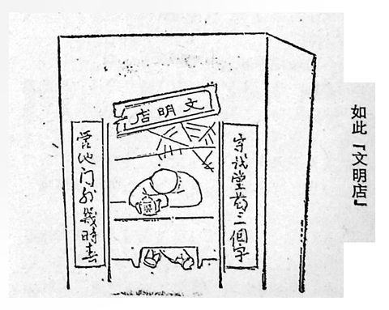

Formalism 18
-

新班子 · The New Leadership Group
Quan Xiao 全笑. Renshi (Personnel), 1985 no. 2 (whole no. 2), p. 47. -
 无题 · Untitled
无题 · Untitled
Wang Qiang 王强. Renshi (Personnel), 1985 no. 2 (whole no. 2), p. 47. -
 彼此彼此 · Six of One
彼此彼此 · Six of One
Unattributed. Renshi (Personnel), 1986 no. 4 (whole no. 7), p. 44. Reprinted from Shanxi ribao (Shanxi Daily). -
 我这一辈子 · My Whole Life
我这一辈子 · My Whole Life
Unattributed. Renshi (Personnel), 1987 no. 6 (whole no. 21), p. 44. Reprinted from Manhua shijie (Cartoon World). -

失火之后 · After the Fire
Wang Daquan 王大全. Renshi (Personnel), 1987 no. 7 (whole no. 22), p. 44. -
 大家都讲“原则” · Everyone Talks “Principle”
大家都讲“原则” · Everyone Talks “Principle”
Zhao Yongzhen 赵永珍. Renshi (Personnel), 1987 no. 7 (whole no. 22), p. 46. -
 梦试（题图） · A Test in a Dream (header drawing)
梦试（题图） · A Test in a Dream (header drawing)
Jia □ 贾□. Renshi (Personnel), 1987 no. 10 (whole no. 25), inside back cover. -
 梦试（插图） · A Test in a Dream (inset drawing)
梦试（插图） · A Test in a Dream (inset drawing)
Jia □ 贾□. Renshi (Personnel), 1987 no. 10 (whole no. 25), inside back cover. -
 风平浪静 · Calm Seas
风平浪静 · Calm Seas
Wang Lijia 王力加. Renshi (Personnel), 1987 no. 11 (whole no. 26), p. 46. -
 空城计下集 · The Empty City Stratagem, Part Two
空城计下集 · The Empty City Stratagem, Part Two
Hua Junwu 华君武. Renshi (Personnel), 1987 no. 12 (whole no. 27), p. 39. -

无题 · Untitled
Li Lin 李林. Renshi (Personnel), 1988 no. 3 (whole no. 30), p. 42. -
 无题 · Untitled (“Catching mice isn't in the job responsibility system”)
无题 · Untitled (“Catching mice isn't in the job responsibility system”)
Sun Xiaoming 孙小鸣. Renshi (Personnel), 1988 no. 8 (whole no. 35), p. 37. -
 按规定办 · Doing It by the Rules
按规定办 · Doing It by the Rules
Le Jialong 乐嘉龙. Renshi (Personnel), 1988 no. 10 (whole no. 37), p. 47. -
 补助（题图） · Allowances (title drawing)
补助（题图） · Allowances (title drawing)
Unattributed. Renshi (Personnel), 1988 no. 11 (whole no. 38), p. 39. -

如此“文明店” · Some “Civilized Shop”
Unattributed. Renshi (Personnel), 1990 no. 1 (whole no. 52), p. 17. -
 评“币”揭晓 · Results of the “Money” Competition
评“币”揭晓 · Results of the “Money” Competition
Sun Xinyi 孙新义. Renshi (Personnel), 1990 no. 6 (whole no. 57), p. 27. -
 劳驾！把奖杯修一修 · Excuse Me — Could You Mend This Trophy?
劳驾！把奖杯修一修 · Excuse Me — Could You Mend This Trophy?
Unattributed. Renshi (Personnel), 1990 no. 8 (whole no. 59), p. 37. -
 并“驾”齐“驱” · Running Neck and Neck
并“驾”齐“驱” · Running Neck and Neck
Wang Yan 王燕. Renshi (Personnel), 1990 no. 8 (whole no. 59), inside back cover.